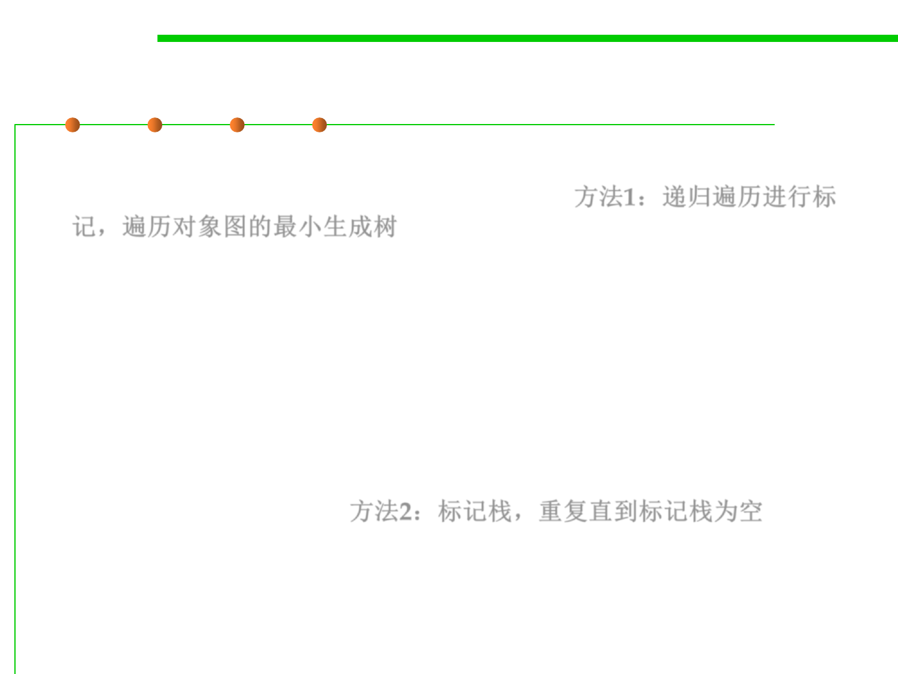

8.1 Metrics, Principles, and Methods of Construction for Performance
The mark-stack
▪ The simplest solution is to implement marking recursively: walk a
minimum spanning tree of the object graph 方法1：递归遍历进行标
记，遍历对象图的最小生成树
mark(N) {
if markBit(N) == UNMARKED {
markBit(N) = MARKED
for M in Children(N)
mark(*M)
}
}
▪ A more efficient method is to use a marking stack: repeat until the
marking stack is empty. 方法2：标记栈，重复直到标记栈为空
– Pop the top item
– If it is unmarked, mark it.
– If it is a branch point in the graph, push any unmarked children onto the
stack